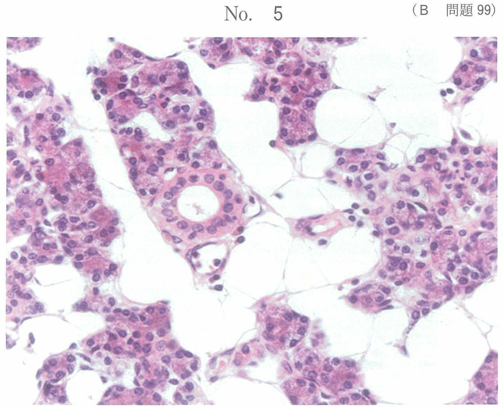

| 分類 | 特徴 | エックス線所見 |
|---|---|---|
| 慢性単純性（漿液性） | ほぼ無症状、軽度の咬合痛 | 歯根膜腔の拡大 |
| 慢性化膿性（慢性歯槽膿瘍） | 瘻孔形成、軽度排膿 | びまん性透過像 |
| 歯根肉芽腫 | 最も頻度が高い | 類円形透過像 |
| 歯根嚢胞 | 嚢胞形成、羊皮紙様感 | 境界明瞭な類円形透過像＋骨硬化線 |
慢性根尖性歯周炎の治療中に急性症状（疼痛、腫脹）が出現すること。
| 要因 | 機序 |
|---|---|
| オーバーインスツルメンテーション | 根尖孔外へ器具・細菌・壊死組織を押し出し |
| 根管洗浄液の溢出 | 根尖孔外への刺激 |
| 過度の根管拡大 | 根尖部への過剰な刺激 |
※ 根管洗浄液の不足、レッジ形成、根管中央部での器具破折、ストリップパーフォレーションはフレアアップの直接的原因とはならない
慢性根尖性歯周炎の治療でフレアアップを誘発するのはどれか。1つ選べ。
【解説】フレアアップは根尖孔外への細菌・壊死組織の押し出しにより誘発される。e オーバーインスツルメンテーションは器具を根尖孔外に突き出すことで、細菌や壊死組織を根尖歯周組織に押し出し、急性炎症を引き起こす。a〜d は根管治療の合併症であるが、フレアアップの直接的原因とはならない。
31歳の男性。下顎左側第一大臼歯の拍動性の自発痛を主訴として来院した。数年前から疲労時に痛みと頬側歯肉部の腫脹とが度々起こるという。初診時の写真（別冊No.6A）、エックス線写真（別冊No.6B）及び髄室開拡後の写真（別冊No.6C）を別に示す。
正しいのはどれか。2つ選べ。

【解説】「数年前から疲労時に痛みと腫脹を繰り返す」＋「拍動性の自発痛」はフェニックス膿瘍（慢性根尖性歯周炎の急性発作）を示唆。d 下顎大臼歯の根管長測定には偏心投影（近心根と遠心根の分離）が必要。e 急性発作時はKファイルで根管を穿通し排膿を試みる。a 下顎第一大臼歯は通常4根管、b 髄室壁の削除は適切、c 根管口の拡大にはラウンドバーではなくゲーツグリデンドリルなどを使用。